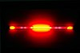

neon

Definition: Neon is a chemical element with the symbol Ne and atomic number 10. It is a noble gas. Neon is a colorless, odorless, inert monatomic gas under standard conditions, with about two-thirds the density of air. It was discovered (along with krypton and xenon) in 1898 as one of the three residual rare inert elements remaining in dry air, after nitrogen, oxygen, argon and carbon dioxide were removed. Neon was the second of these three rare gases to be discovered and was immediately recognized as a new element from its bright red emission spectrum. The name neon is derived from the Greek word, νέον, neuter singular form of νέος (neos), meaning 'new'. Neon is chemically inert, and no uncharged neon compounds are known. The compounds of neon currently known include ionic molecules, molecules held together by van der Waals forces and clathrates.
Source: Wikipedia
Wikipedia Page (Something wrong with this association? Let us know.)
Wikidata Page (Something wrong with this association? Let us know.)